학교 정보
학교 이름·문의 전화를 넣고, 가정통신문에 넣을 학생 앱 인증 코드를 확인합니다.
실시간 통학버스 위치 서비스
버스가 어디쯤 오는지, 우리 정류장에 몇 분 뒤 닿는지 학부모 휴대전화에 바로 보입니다. 기사님은 버튼 하나만 누르고, 학교는 지도 한 장으로 모든 버스를 봅니다.
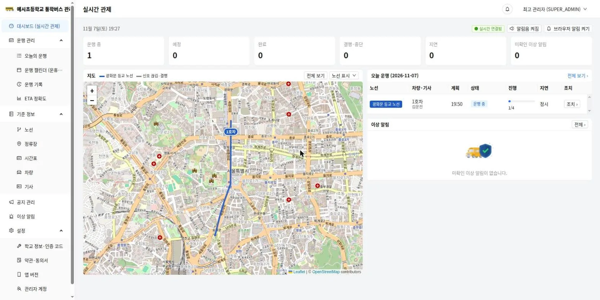
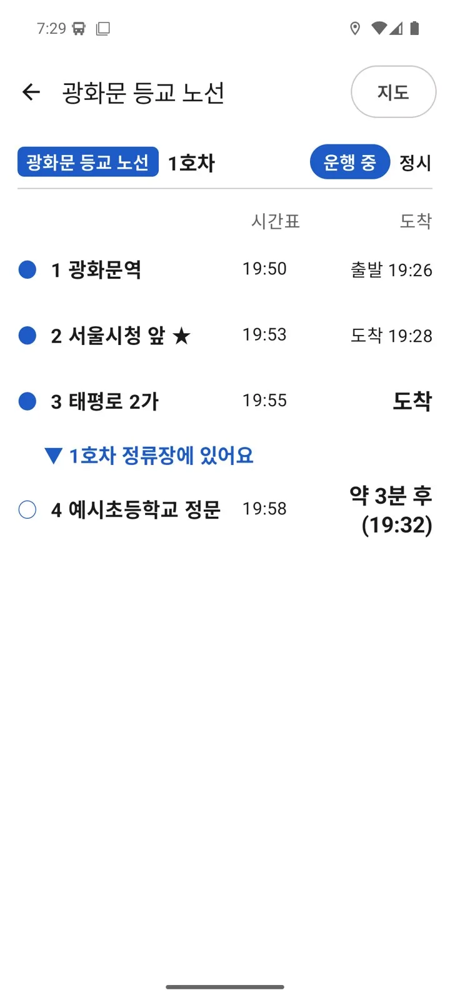
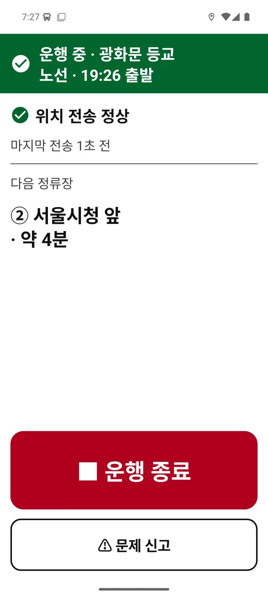
하루 흐름
학교가 정류장·노선·시간표를 한 번 넣어 두면 운행이 날마다 자동으로 만들어집니다.
정류장·노선·차량·기사·시간표를 넣으면 예정 운행이 자동으로 생깁니다.
첫 정류장에서 운행 시작을 누르고 운전합니다. 위치는 앱이 알아서 보냅니다.
내 정류장 도착 예정 시간을 보고, 출발·도착 알림을 받습니다.
지연·결행을 등록하면 학생 앱과 기사 앱에 바로 전달됩니다.
마지막 정류장에 닿으면 운행이 끝나고 기록이 남습니다.
학부모 · 학생 앱
버스가 지금 어느 정류장을 지났는지, 우리 정류장까지 몇 분 남았는지 한눈에 봅니다.
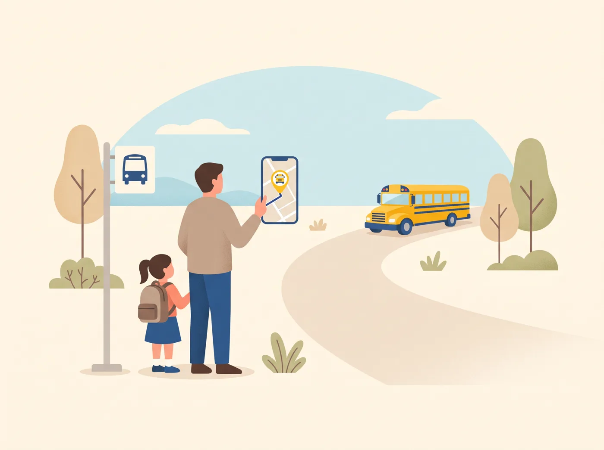
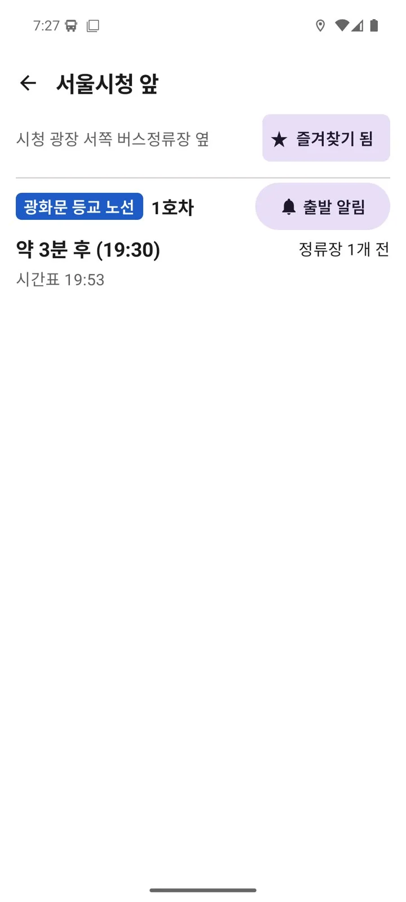
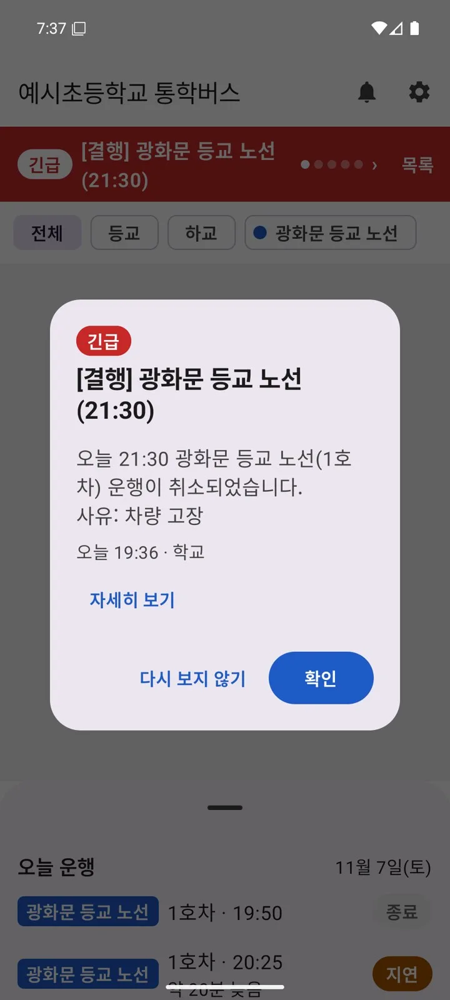
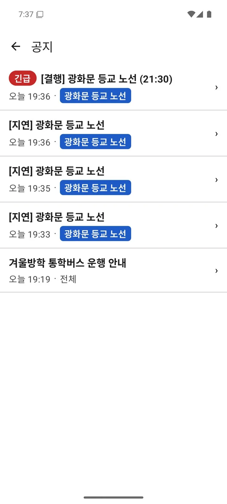
기사 앱
출발할 때 커다란 운행 시작 버튼 하나. 나머지는 앱과 학교 서버가 알아서 합니다.
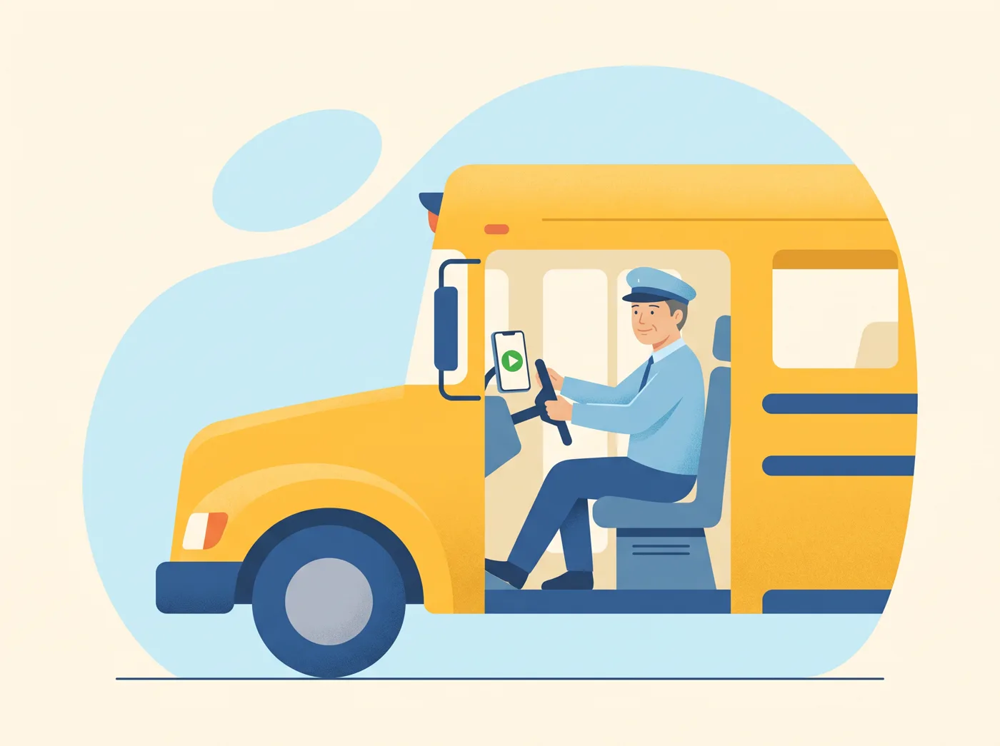
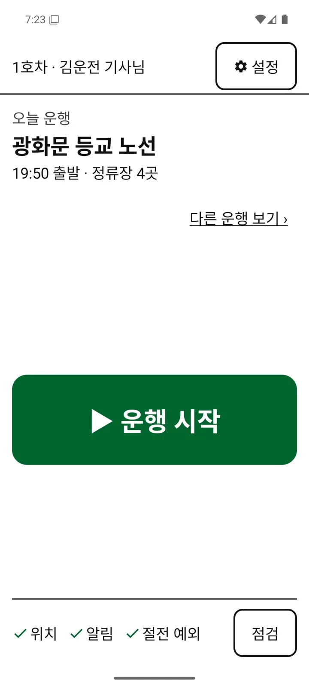
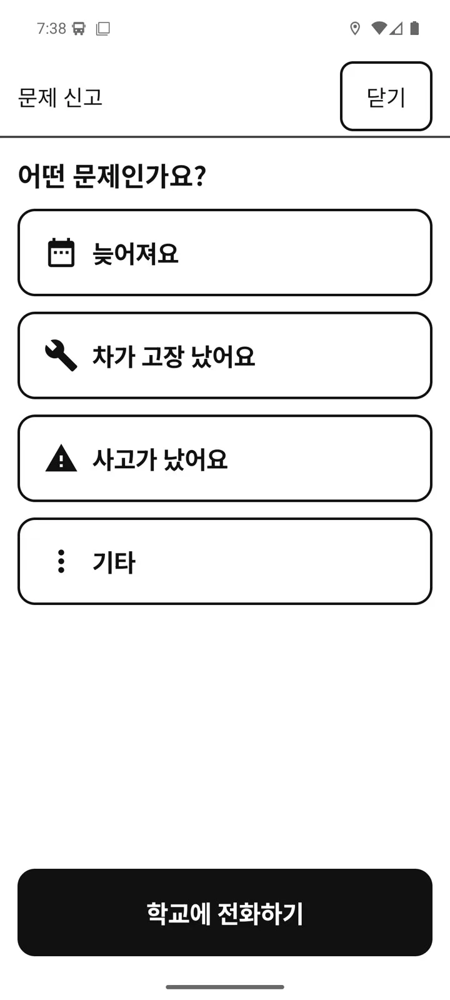
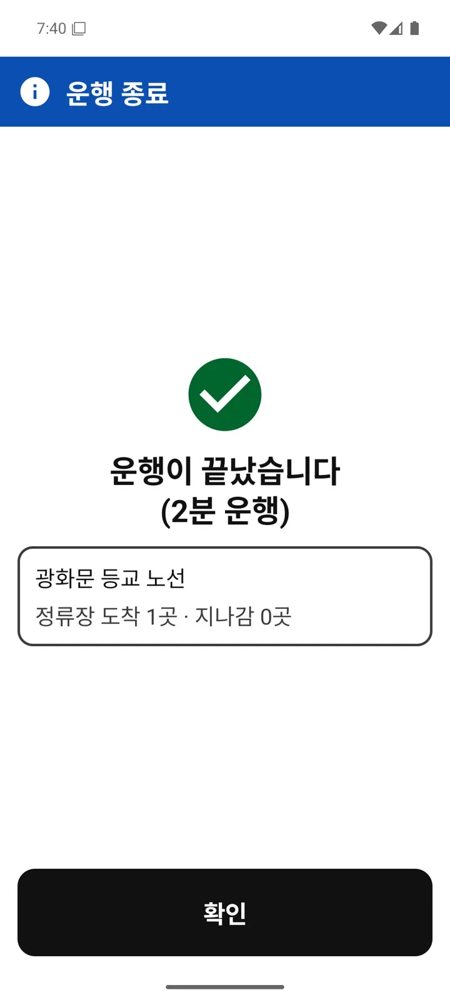
학교 관리자 웹
행정실·교무실에서 브라우저로 버스를 실시간으로 보고, 지연·결행·공지를 처리합니다.
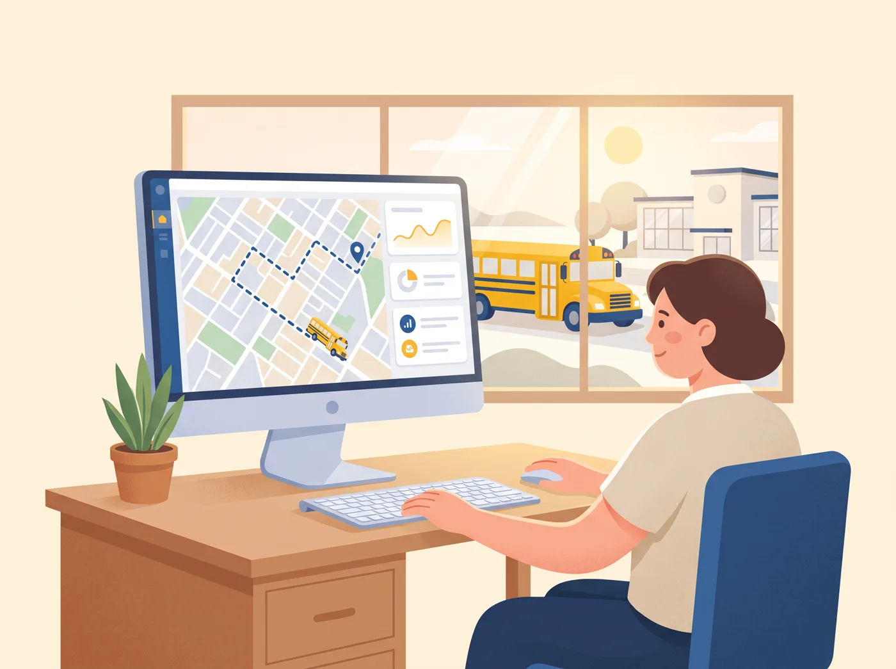
운행 중·예정·완료·결행·지연·미확인 알림 수를 맨 위에서 보고, 노선마다 지난 정류장 수와 지연을 확인합니다. 알림음과 브라우저 알림도 켤 수 있습니다.
출발 시각이 지났는데 시작하지 않은 운행, 신호 끊김, 경로 이탈, 기사님의 문제 신고가 빨간 알림으로 뜹니다. 확인한 알림은 눌러서 정리합니다.
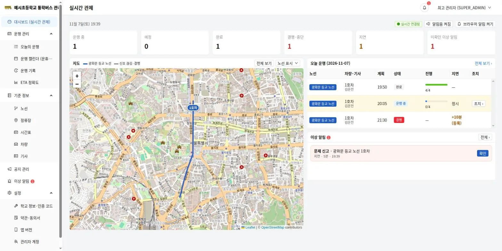
지연 시간과 사유를 고르면 새 예정 시각이 계산되고, 공지 제목·본문이 자동으로 채워집니다. 푸시를 켜면 그 노선을 고른 학부모에게 바로 알림이 갑니다. 지연을 바꾸면 앞서 낸 공지는 자동으로 보관됩니다.
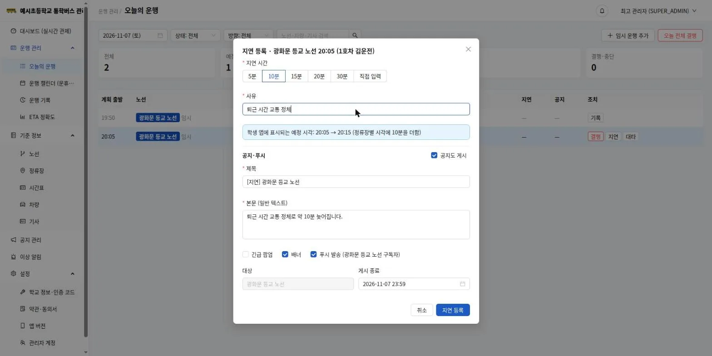
버스가 실제로 다닌 길을 1×·4×·16× 속도로 다시 봅니다. 기사님 위치는 개인위치정보라 조회 사유를 넣어야 하고, 조회 기록은 감사 로그에 남습니다.
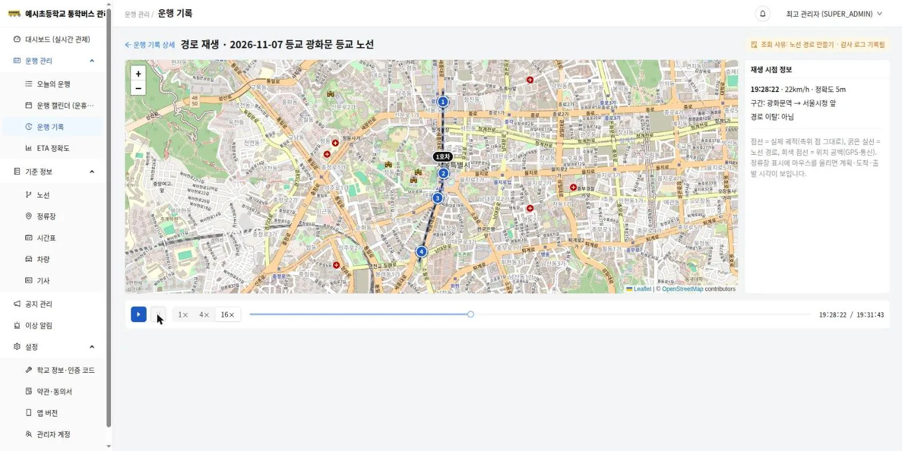
학생 앱이 보여 준 도착 예정 시각과 실제 도착의 차이를 노선별로 봅니다. 오차가 큰 노선은 정류장 계획 시간을 다시 맞추면 됩니다.
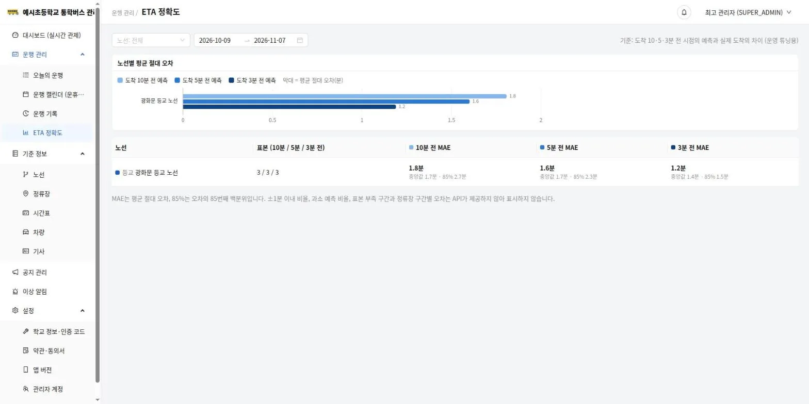
도입 절차
지도에서 정류장을 찍고 노선을 그리면 됩니다. 시간표를 저장하는 순간 일주일치 운행이 만들어집니다.
학교 이름·문의 전화를 넣고, 가정통신문에 넣을 학생 앱 인증 코드를 확인합니다.
지도에서 위치를 누르면 정류장이 생깁니다. 도착으로 판정할 범위도 정합니다.
정류장 순서를 정하고 버스가 다니는 길을 지도에 그립니다.
호차와 기사를 등록하고 출발 시각·요일을 고르면 운행이 자동으로 만들어집니다.
안전과 개인정보
학생 앱은 회원 가입·로그인이 없습니다. 이름이나 전화번호도 묻지 않습니다.
기사님 위치는 운행하는 동안에만 보냅니다. 동의는 앱에서 받고 언제든 철회할 수 있습니다.
지난 경로를 보려면 조회 사유를 써야 하고, 누가 언제 봤는지 감사 로그에 남습니다.
우리 학교 코드를 아는 사람만 볼 수 있습니다. 코드가 퍼지면 관리자 웹에서 재발급합니다.
자주 묻는 질문
학생 앱을 설치하고 가정통신문에 있는 학교 인증 코드 8자리를 넣으면 됩니다. 아이가 타는 노선을 고르면 그 노선의 출발 알림과 긴급 공지를 받습니다.
안드로이드 8.0 이상 휴대전화면 됩니다. 학교에서 받은 휴대전화 번호와 PIN 6자리로 로그인합니다.
마지막 정류장에 도착하면 학교 서버가 운행을 자동으로 끝냅니다. 출발 시각이 지났는데 운행이 시작되지 않으면 학교에 이상 알림이 뜹니다.
기사 앱에 “위치 신호가 약해요” 띠가 뜨고 자동으로 다시 찾습니다. 인터넷이 안 될 때는 위치를 휴대전화에 저장해 두었다가 연결되면 한꺼번에 보냅니다.
관리자 웹의 운행 캘린더에서 운휴일을 지정합니다. 전체 노선을 쉬거나 일부 시간표만 쉬게 할 수 있습니다.
관리자 웹에서 지연을 등록하면 공지가 자동으로 작성되고, 푸시를 켜면 그 노선을 고른 학부모에게 바로 알림이 갑니다. 기사님 앱에도 지연 소식이 보입니다.